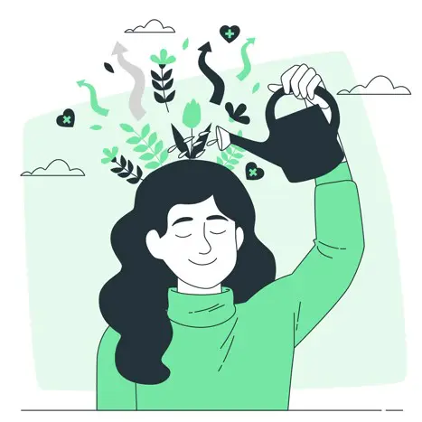

Autocuidado
El autocuidado abarca desde las acciones simples del aseo personal y una alimentación equilibrada hasta la ocupación adecuada del tiempo libre y la realización de actividades de ocio o de socialización con otros pares. Mientras los más activos prefieren los deportes, el baile o las actividades grupales, otros optan por rutinas en solitario o en casa como leer, escuchar música o pasar tiempo en redes sociales.
